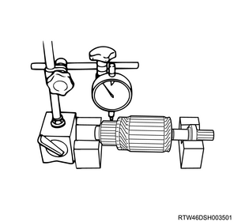
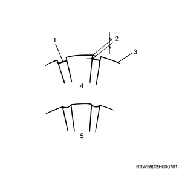
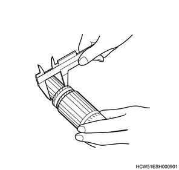
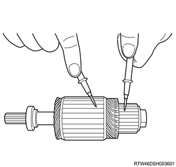
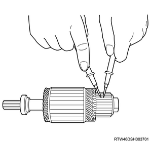
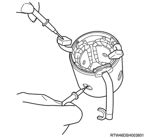
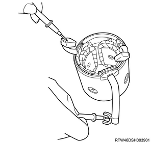
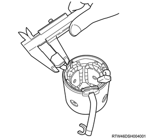
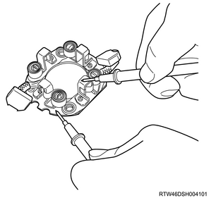
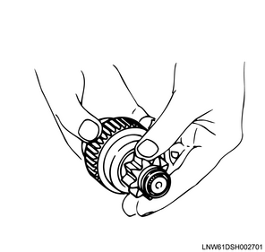

1. Measure the commutator using a dial gauge.
Note
Standard： 0.05 mm { 0.0020 in }
Limit： 0.25 mm { 0.0098 in }

2. Inspect the commutator.
Note
3. Measure the commutator using a vernier caliper.
Note
Standard： 0.5 to 0.8 mm { 0.020 to 0.031 in }
Limit： 0.2 mm { 0.008 in }
Note

4. Measure the commutator using a vernier caliper.
Note
Standard： 36.5 mm { 1.437 in }
Limit： 35.5 mm { 1.398 in }

5. Measure the armature using the circuit tester.
Note

6. Measure the armature using the circuit tester.
Note

1. Measure the yoke using the circuit tester.
Note

Note

1. Measure the brush using a vernier caliper.
Note
Standard： 15 mm { 0.59 in }
Limit： 12 mm { 0.47 in }

2. Measure the brush holder using the circuit tester.
Note

3. Inspect the brush.
Note
1. Inspect the overrunning clutch.
Note
2. Turn the pinion.
Note
